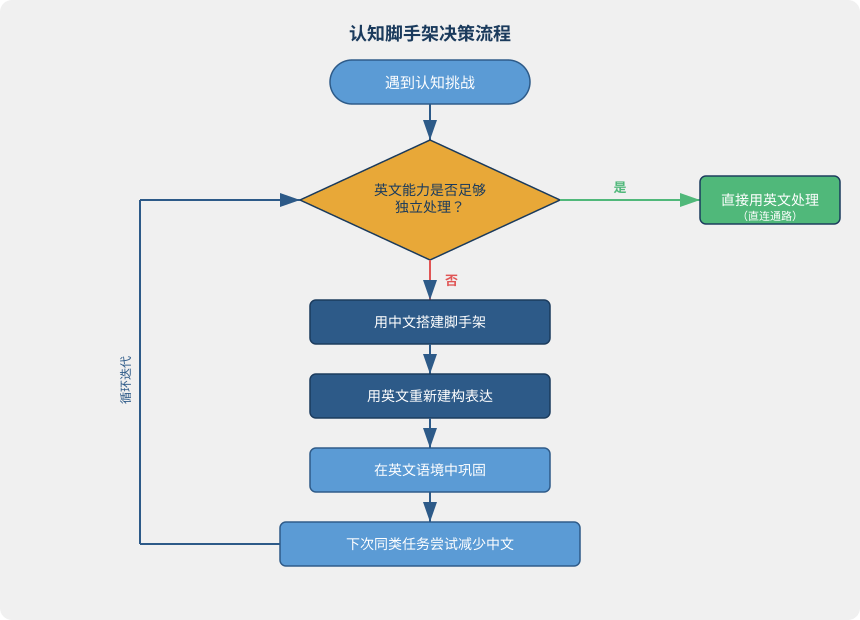
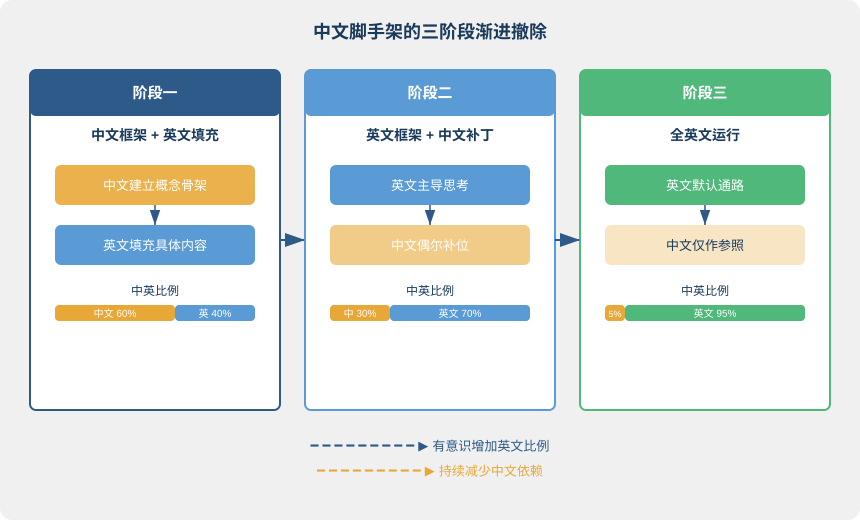
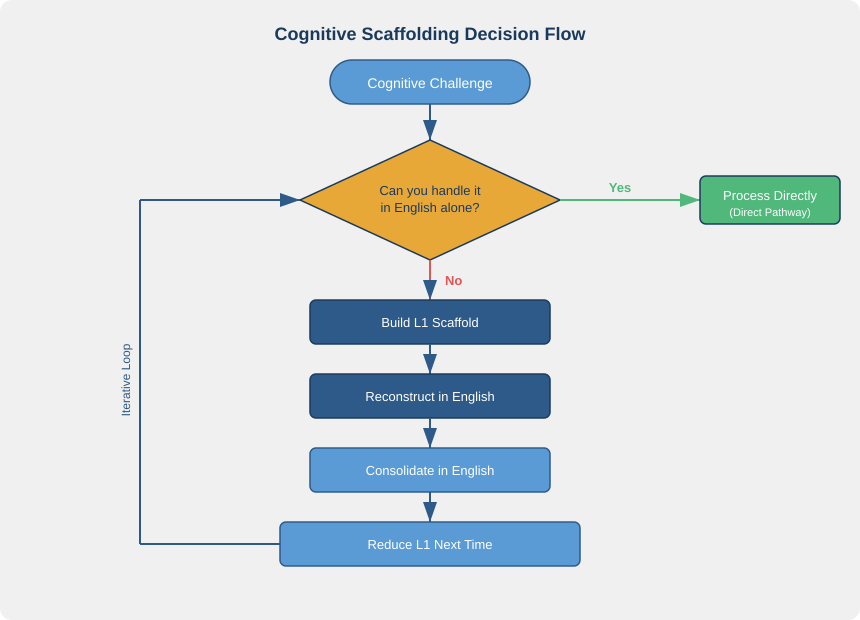
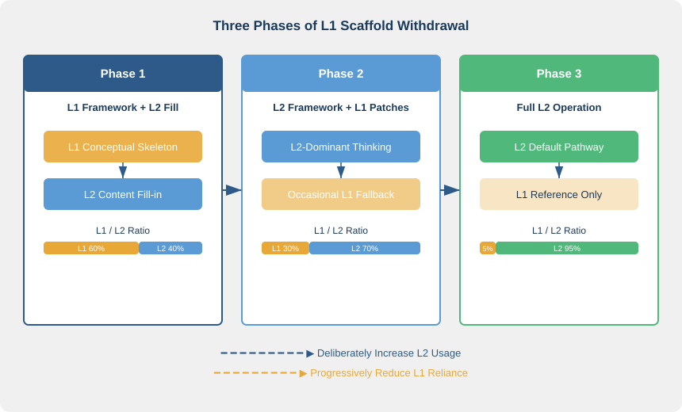

第七章：中文的正确角色
The Proper Role of Chinese
"The first language is the scaffolding; the second language is the building." — Lev Vygotsky (paraphrase)
核心问题：中文在英语学习中什么时候在帮你、什么时候在拖你后腿？
7.1 一个真实的课堂实验
1995 年，语言学家 Merrill Swain 和她的同事在加拿大安大略省跟踪了一批法语沉浸式教学(French Immersion)项目的学生。这些学生的母语是英语，从小学起所有学科都用法语授课，课堂规则明确：禁止说英语。
结果出乎意料。学生的法语口语确实流利，但在需要高阶思维的任务中(比如写议论文、讨论抽象概念)，表现远不如预期。Swain & Lapkin 在 2000 年的后续研究中揭开了原因：研究者观察学生的协作过程时发现，即使被禁止，学生仍然会在关键节点悄悄切回英语。他们用英语做什么？不是闲聊，而是理清思路、确认彼此理解、管理任务步骤。英语在这些节点扮演的角色，恰恰是认知脚手架(Cognitive Scaffolding)。
更有意思的是对比。另一组教师允许学生在特定环节使用英语：理解任务要求时、讨论新概念时、规划写作结构时。这组学生的法语作文质量反而更高。为什么？因为他们没有把认知资源浪费在"如何用不够熟练的语言理解一个全新概念"上，而是先用母语搞清楚概念，再把精力集中在法语表达上。
这个发现刺激了我反思自己的经历。我第一次读量子力学英文教材时，死磕了三天也没搞懂薛定谔方程的物理含义。后来换了一篇中文科普文章，两个小时就理解了波函数坍缩的核心逻辑。再回头读英文教材，每个术语都落到了对应的概念格子里。"wave function collapse"不再是一串需要翻译的字母，而是一个已经理解的物理图景的英文标签。
Swain 的研究和我的经历指向同一个结论：母语不是敌人，也不是万能药。关键在于你把它当什么用。禁止一切中文，还是策略性地使用中文？这不是信仰问题，是认知科学问题。
7.2 母语迁移：双刃剑
Odlin 在 1989 年出版的《语言迁移》(Language Transfer)中论证了一个核心观点：母语对二语学习的影响不是单向的。它既有正迁移(Positive Transfer)，也有负迁移(Negative Transfer)。把母语一律视为阻碍是片面的，把母语一律视为资源也太天真。迁移的方向取决于迁移发生在哪个层面。
正迁移：中文在"意"的层面帮你
中文是话题突出(Topic-prominent)语言。说话时先抛出话题再展开评论："这个方案，我觉得风险太大。"这种思维习惯迁移到英文阅读时，反而帮助你快速抓住段落的主题句(Topic Sentence)。英文学术写作的核心规则是每段第一句是主题句，对中文母语者并不陌生，因为"先说话题再展开"本就是你的认知默认。
中文是高语境(High-context)语言，很多信息不在文字里，在言外之意里。这种敏感度迁移到英文语用(Pragmatics)层面时是优势。你更容易察觉 "That's an interesting approach" 在学术场合往往不是赞美，而是委婉的质疑。为什么？因为你习惯了"话里有话"。
中文的四字成语文化(言简意赅、高度凝练)也帮助你理解英文中的习语(Idioms)和固定搭配。"破釜沉舟"和 "burn one's bridges" 跨越语言边界，共享同一层"意"。当你理解一种文化里的凝练表达习惯时，你更容易接受另一种文化的凝练表达。
负迁移：中文在"表达"的层面拖你
中文没有动词形态变化。时间信息靠"了""过""将要"等副词承载，动词本身不变形。这套"出厂设置"迁移到英文，结果就是时态混乱。你不是不懂时态规则，而是你的母语从未要求你在说每个动词时都做一次时态决策。大脑没有为这个操作分配注意力的习惯。
中文允许主语省略。"很好吃"不需要说"它"或"这道菜"，语境补全一切。迁移到英文，就变成了 "Is very delicious"，句子缺了主语，英文读者一头雾水。你不是不知道英文需要主语，而是你的语言直觉里"不说主语"是默认选项。
最深层的负迁移是"翻译反射"(Translation Reflex)。当中文框架主导了你的思维组织方式，你说出来的英文就是"穿着英文外衣的中文"。"I very like this"(我很喜欢这个)、"He yesterday go to school"(他昨天去学校)，表面上是词汇和语法错误，实际上是中文句法结构在暗中操控英文输出。
关键洞察
正迁移发生在"意"的层面：概念理解、逻辑敏感度、文化直觉。这些是深层认知能力，可以跨语言共享。负迁移发生在"表达"的层面：语法结构、词序、形态变化。这些是表层语言编码，两种语言的规则不同，套用就会出错。
这就引出了本章的核心主张：利用中文的深层优势(概念层)，同时警惕中文的表层干扰(语法层)。不是"要不要用中文"的问题，而是"在哪个层面用中文"的问题。
7.3 认知脚手架：中文的正当用法
Vygotsky 在 1978 年提出的最近发展区(Zone of Proximal Development, ZPD)理论为中文的角色提供了精确的框架。学习者的能力有两个边界：独立完成的上限，以及在帮助下完成的上限。两个边界之间就是 ZPD，真正的学习发生在这片区域里。
脚手架(Scaffolding)是让学习者在 ZPD 中前进的工具。它有三个定义性特征：临时的、按需提供的、随能力增长而撤除的。中文可以充当英语学习中的认知脚手架，但前提是它满足这三个特征。
场景一：新概念的初始框架
当你进入一个全新的知识领域(法律、金融、量子物理)，大脑需要一张概念地图。如果你在这个领域连中文都不懂，直接用英文学就更是两眼一抹黑。此时用中文快速建立概念框架是高效的策略。
回到 7.1 节的例子：我先用中文搞清楚波函数坍缩的物理意义，再用英文填充具体细节。中文提供"骨架"(核心概念之间的关系)，英文负责"肌肉和皮肤"(术语、公式、推导)。骨架搭好之后，每个英文术语都有了归属位置，学习效率倍增。
但关键在"之后"。如果你每次讨论 wave function collapse 都要先在心里调出中文标签，脚手架就没有被撤除，它变成了永久结构。目标是让英文标签直接连接到概念地图，中文标签退出回路。
场景二：高度抽象的推理
人的工作记忆(Working Memory)容量有限，大约能同时处理四到七个信息块。当你进行高度复杂的逻辑推演时(比如分析一个多因素商业决策)，推理本身已经占满了工作记忆。如果同时还要用一门不够自如的语言来承载这个推理，系统就会过载。
此时用中文辅助推理是合理的。先用中文理清逻辑链条(前提、推论、结论)，再用英文重新表达。注意：是"重新表达"，不是"翻译"。你用英文组织的句子不应是中文句子的逐词对应，而是基于已理清的逻辑，在英文系统内重新生成的表达。
目标是逐步过渡。每一次在类似场景中练习，英文承担推理的比例应该增加。最终，英文应该能够独立承载你在该领域的全部推理。
场景三：情感表达的过渡
你生命中最原初的情感(父母的呼唤、童年的恐惧、初恋的悸动)都是用中文编码的。Pavlenko (2005) 的研究表明，双语者的情感加工在两种语言中往往不对等，母语承载着更深、更自动化的情感反应。
当你需要表达强烈情感而英文还不够"到位"时，先用中文确认"我想表达的意到底是什么"是有价值的。不是为了翻译中文句子，而是为了在情感上"锁定"那个意。意被锁定之后，再用英文寻找对应的表达方式。随着你在英文中积累足够多的情感体验(读到让你落泪的小说、看到让你愤怒的新闻、用英文进行过深夜长谈)，英文的情感通路会逐渐丰满。

这张图展示了脚手架的完整生命周期：搭建、使用、巩固、撤除。核心在于那个回路。每一轮循环之后，你都应该比上一轮更少地依赖中文。脚手架不是永久设施，它是一个自我消解的支撑系统。
7.4 翻译反射 vs 策略性使用：关键区别
前面的分析引出了一个核心区分：并非所有"在英文中使用中文"都是一回事。有两种性质完全不同的中文参与方式，混淆它们是很多学习者的致命误区。
翻译反射(Translation Reflex)是无意识的、全面的、自动化的中文中介。它发生在你意识不到的层面。你想说一句英文，大脑自动先生成完整的中文句子，再逐词翻译。你甚至不知道自己在翻译，因为这条回路已经成为默认设置。这是前六章反复要求克服的核心障碍。
策略性使用(Strategic Use)是有意识的、局部的、临时的中文辅助。你清楚地知道"我现在借助中文是因为这个概念还没有在英文中建好"，用完之后主动撤除。这是本章论证的正当用法。
两者的区别可以用一张表精确呈现：
| 维度 | 翻译反射(要克服) | 策略性使用(可保留) |
|---|---|---|
| 意识 | 无意识 / 自动触发 | 有意识 / 刻意选择 |
| 范围 | 全面，每句话都走中文回路 | 局部，只在特定难点使用 |
| 持续性 | 持久，成为默认模式 | 临时，用完即撤 |
| 方向 | 中文→英文(逐句翻译) | 中文理解→英文重建(非翻译) |
最后一行是最关键的区分。策略性使用中文不是"用中文想好一句话再翻译成英文"，而是"用中文帮助理解概念或理清逻辑，然后在英文系统内重新建构表达"。前者的产物是"穿着英文外衣的中文"，后者的产物是"站在中文肩膀上生长出来的英文"。
Cook 在 2001 年的研究中为这个区分提供了学术支撑。他区分了 L1 在外语学习中的"建设性使用"(Constructive Use)和"依赖性使用"(Dependent Use)。建设性使用是脚手架，帮助理解、对比分析、概念引导。依赖性使用是拐杖，逐句翻译、默认中介、回避英文思考。脚手架让你爬得更高然后被拆掉，拐杖让你永远离不开它。
如何判断自己属于哪一种？一个简单的测试：当你用中文辅助后，能否在不回忆中文原文的情况下直接用英文表达同样的意？如果能，你在做策略性使用。如果你发现自己必须先回忆中文句子再翻译，你仍在翻译反射的回路中。
7.5 渐进撤除：从辅助轮到独立骑行
脚手架最核心的特征是：它必须被撤除。楼建好了脚手架还留着，那不叫支撑，叫累赘。Bruner 在 1986 年发展了脚手架理论的实践维度：有效的脚手架应该随学习者能力增长而逐步减少。撤除的节奏要与成长同步。太快，学习者会摔倒。太慢，学习者会产生依赖。
在英语学习中，中文脚手架的撤除可以建模为三个阶段。
阶段一：中文框架 + 英文填充。 你用中文建立概念结构，用英文学习具体内容。就像我学量子力学那样，中文提供骨架，英文负责血肉。这个阶段出现在你初学某个全新领域时，完全正常。关键指标：你的笔记里中英文混杂，中文承担结构性角色，英文承担细节性角色。
阶段二：英文框架 + 中文补丁。 你主要用英文思考和表达，只在偶尔卡住时用中文打个补丁。比如讨论一个你已经比较熟悉的话题时，95% 的内容可以用英文流畅表达，但遇到一个特别刁钻的概念可能还需要中文辅助。关键指标：你的思维默认在英文中运行，中文只在"急救"时出场。
阶段三：全英文 + 偶尔中文参照。 英文成为你在该领域的默认语言。中文只在极少数情况下作为参照系，比如向中国同事解释一个英文概念时需要"反向翻译"。关键指标：你在该领域思考时，脑中浮现的是英文词汇和英文逻辑结构，中文几乎不再自动介入。

一个容易忽视的事实：每个人在不同领域可能同时处于不同阶段。你在工作领域可能已经到了阶段三，技术讨论完全不需要中文。但当你进入一个全新领域(比如从工程师转去学法律)，你可能瞬间回到阶段一。这不是退步。新领域意味着新的概念空白，空白处需要脚手架。
推进撤除的核心驱动力不是"意志力"，而是"英文语境的持续接触"。你在某个领域读了大量英文材料、参加了大量英文讨论、写了大量英文文档之后，英文通路自然会接管。不需要你刻意"禁止中文"，中文会自动退场，因为它不再被需要了。就像学骑自行车的辅助轮：没有人需要"决定"拆掉辅助轮，当你骑得够稳时，辅助轮自然变得多余。
7.6 双语优势：中文不是包袱，是资产
前面的讨论可能给你一个印象：中文是一个需要被"管理"的麻烦。换一个更宏观的视角看，中文是你拥有的最强大的认知资产之一。
Bialystok 在 2001 年的研究系统论证了双语认知优势(Bilingual Cognitive Advantage)。她发现双语者在三个认知维度上显著优于单语者。第一，认知灵活性(Cognitive Flexibility)，在不同规则系统之间快速切换的能力。第二，执行功能(Executive Function)，抑制干扰信息、聚焦目标的能力。第三，注意控制(Attentional Control)，在竞争性刺激中选择性分配注意力的能力。
这些优势的来源恰恰是双语者的"困境"。你的大脑里有两套语言系统在竞争，每次你说话或思考时都需要激活一套、抑制另一套。这个持续的认知"体操"锻炼了大脑的控制机制，就像负重训练锻炼肌肉。
中文和英文代表两套截然不同的"意→表达"映射系统。中文是话题突出、高语境、无形态变化的分析语。英文是主语突出、低语境、有丰富形态变化的屈折语。拥有这两套系统不是负担，而是认知财富。你比只会英文的人多了一个理解世界的维度。
目标从来不是"消灭中文"。目标是让两套系统各司其职：在英文语境中，让"意→英文"通路主导；在中文语境中，让"意→中文"通路主导；在跨语言任务中(如翻译、口译、双语写作)，让两条通路协同工作。两条通路不是竞争关系，而是互补关系。它们共享同一个底层的"意"，但各自拥有独特的表达方式。
7.7 🔬 语言实验：追踪你的中文使用
这个实验需要一天的时间和一支笔(或手机备忘录)。
方法： 选一天，在你使用英文的过程中(阅读、听力、说话、写作)，每次意识到中文"介入"时就做一个标记，并简要记录介入的性质。
记录格式：
| 时间 | 场景 | 中文介入方式 | 类型 | 是否有帮助？ |
|---|---|---|---|---|
| 9:15 | 读技术文档 | 遇到新概念，用中文查了定义 | 策略性使用 | 是 |
| 10:30 | 英文会议 | 想说的话先在心里组织了中文 | 翻译反射 | 否，拖慢了 |
| 14:00 | 写邮件 | 没有中文介入 | - | - |
| 15:30 | 听播客 | 一个长句没听懂，用中文复述了大意 | 策略性使用 | 是 |
一天结束后回顾三个问题：
- 哪些中文介入是"翻译反射"，无意识的、全面的、自动发生的？
- 哪些是"策略性使用"，有意识的、局部的、用完就撤的？
- 哪些中文介入确实帮助了你理解或表达？哪些反而拖慢了你的节奏？
目标不是消灭中文介入，而是提高对它的觉察。知道它什么时候出现、为什么出现、该不该保留。觉察是改变的前提。当你能清晰地区分"我正在翻译"和"我正在策略性使用中文"时，你就获得了对这个过程的控制权。
7.8 总结与过渡
这一章的核心论点可以浓缩为四句话：
- 母语迁移是双刃剑。 中文在"意"的层面(概念理解、文化敏感度)提供正迁移，在"表达"的层面(语法结构、形态变化)造成负迁移。利用前者，警惕后者。
- 中文是认知脚手架，不是永久结构。 在新概念引导、复杂推理辅助、情感表达过渡三个场景中，中文有正当的辅助角色。但脚手架的定义特征是临时性，用完必须撤除。
- 翻译反射和策略性使用是两回事。 无意识的全面翻译要克服，有意识的局部辅助可以保留。分界线在于：你的英文表达是中文句子的翻译品，还是在英文系统内重新建构的产物？
- 中文不是包袱，是资产。 双语能力带来认知灵活性、执行功能和注意控制的优势。目标不是消灭中文，而是让两套系统各司其职、协同工作。
到目前为止，前七章画出了一幅完整的学习理论图景：翻译的墙(第一章)、意先于语言(第二章)、直连通路(第三章)、文化骨架(第四章)、输入策略(第五章)、输出策略(第六章)、中文的正确角色(本章)。但学习不是发生在真空中的，它发生在你的日常生活里。第八章将讨论一个关键的实践问题：如何在你的日常环境中构建一个"英文认知栖息地"，让学习从刻意练习变成自然生长。
参考文献
-
Odlin, T. (1989). Language Transfer: Cross-linguistic Influence in Language Learning. Cambridge University Press. DOI: 10.1017/CBO9781139524537 — 语言迁移研究的经典之作，系统论证母语对二语学习既有正迁移也有负迁移，迁移方向取决于语言特征的相似性和差异性。
-
Vygotsky, L. S. (1978). Mind in Society: The Development of Higher Psychological Processes. Harvard University Press. — 提出最近发展区(ZPD)理论，奠定脚手架教学法的理论基础：学习发生在独立能力与辅助能力之间的区域，有效教学是在这个区域内提供恰到好处的支撑。
-
Bruner, J. (1986). Actual Minds, Possible Worlds. Harvard University Press. — 发展了脚手架理论的实践维度，论证有效的教学支持应随学习者能力增长而逐步减少，撤除节奏需与学习者的成长同步。
-
Bialystok, E. (2001). Bilingualism in Development: Language, Literacy, and Cognition. Cambridge University Press. DOI: 10.1017/CBO9780511605963 — 系统论证双语认知优势，发现双语者在认知灵活性、执行功能和注意控制上显著优于单语者，两套语言系统的共存强化了大脑的认知控制机制。
-
Cook, V. (2001). Using the first language in the classroom. Canadian Modern Language Review, 57(3), 402–423. DOI: 10.3138/cmlr.57.3.402 — 论证 L1 在外语学习中的合理角色，区分建设性使用和依赖性使用，挑战"全英文教学"的绝对化立场。
-
Antón, M., & DiCamilla, F. J. (1999). Socio-cognitive functions of L1 collaborative interaction in the L2 classroom. The Modern Language Journal, 83(2), 233–247. DOI: 10.1111/0026-7902.00018 — 实证研究 L1 在协作学习中的脚手架功能，发现学习者自发使用 L1 来管理认知负荷、建立共同理解和调节任务执行。
-
Swain, M., & Lapkin, S. (2000). Task-based second language learning: The uses of the first language. Language Teaching Research, 4(3), 251–274. DOI: 10.1177/136216880000400304 — 通过对加拿大法语沉浸式项目学生的实证观察，论证 L1 在 L2 协作任务中的认知脚手架功能：学生自发使用 L1 来管理任务、理清思路和确认理解。
-
Pavlenko, A. (2005). Emotions and Multilingualism. Cambridge University Press. — 论证双语者情感加工在两种语言中的不对等性，母语承载更深层、更自动化的情感反应。
Chapter 7: The Proper Role of Chinese
"The first language is the scaffolding; the second language is the building." — Lev Vygotsky (paraphrase)
Central question: When does Chinese help your English learning, and when does it hold you back?
7.1 A Real Classroom Experiment
In 1995, linguist Merrill Swain and her colleagues tracked a cohort of students in Ontario, Canada, enrolled in a French Immersion program. These students were native English speakers who'd been taught every subject in French since elementary school. The classroom rule was explicit: no English allowed.
The results surprised everyone. Students' spoken French was indeed fluent, but on tasks requiring higher-order thinking (writing argumentative essays, discussing abstract concepts), performance fell well short of expectations. In a 2000 follow-up study, Swain and Lapkin uncovered the reason. Observing students during collaborative tasks, they found that even under the ban, students kept switching back to English at critical junctures. They weren't chatting idly. They were using English to clarify their thinking, confirm mutual understanding, and manage task steps. At those junctures, English was playing exactly the role of cognitive scaffolding.
The contrast group proved even more telling. A second set of teachers allowed English at specific points: when parsing task requirements, when grappling with new concepts, when planning essay structure. This group's French compositions turned out to be better. Why? Because they didn't waste cognitive resources trying to grasp a brand-new concept in a language they hadn't fully mastered. They clarified the concept in their first language, then channeled their energy into French expression.
That finding forced me to rethink my own experience. The first time I read a quantum mechanics textbook in English, I ground through three days without grasping the physical meaning of the Schrödinger equation. Then I picked up a Chinese popular-science article and, within two hours, understood the core logic of wave-function collapse. Going back to the English textbook, every term fell into its proper conceptual slot. "Wave function collapse" was no longer a string of letters waiting to be translated; it was an English label for a physical picture I already understood.
Swain's research and my experience point to the same conclusion: the mother tongue is neither enemy nor cure-all. The question is what you use it for. Banning all Chinese versus deploying it strategically isn't a matter of faith. It's a question cognitive science can answer.
7.2 Transfer from the Mother Tongue: A Double-Edged Sword
In his 1989 book Language Transfer, Odlin argued a central claim: the mother tongue's influence on second-language learning runs in both directions. It produces positive transfer and negative transfer alike. Treating the mother tongue purely as an obstacle is reductive; treating it purely as a resource is naive. Which direction transfer takes depends on which level it operates at.
Positive Transfer: Chinese Helps at the Level of Yì
Yì (pre-linguistic meaning-intention) refers to the conceptual substance and intention that exist before or beneath language choice. Chinese helps precisely at this deep level.
Chinese is a topic-prominent language. Speakers introduce the topic first, then comment: "This plan, I think the risk is too high." This habit transfers usefully to English reading, making it easier to spot the topic sentence of a paragraph. The central rule of English academic writing, one topic sentence per paragraph, isn't alien to Chinese speakers, because "topic first, then elaboration" is already your cognitive default.
Chinese is a high-context language. Much information lives outside the literal text, in what's implied. That sensitivity transfers as a real advantage in English pragmatics. You're more likely to sense that "That's an interesting approach" in an academic setting often signals polite skepticism rather than praise. Why? Because you're used to meaning between the lines.
Chinese four-character idioms, terse and highly condensed, also prepare you to appreciate English idioms and collocations. "破釜沉舟" (break the cauldrons and sink the boats) and "burn one's bridges" cross linguistic boundaries, sharing the same layer of yì. When you understand how meaning gets condensed in one culture's expressions, you're better equipped to accept another culture's condensed forms.
Negative Transfer: Chinese Holds You Back at the Level of Expression
Chinese has no verb inflections. Temporal information rides on particles and adverbs (了, 过, 将要) while the verb itself stays unchanged. This default transfers into English as tense confusion. You know the rules; your mother tongue simply never required you to make a tense decision for every verb. The brain has no habit of allocating attention to that operation.
Chinese permits subject omission. "很好吃" needs no explicit "it" or "this dish"; context fills in the rest. In English, this becomes "Is very delicious," a sentence missing its subject. You know English requires a subject, but your linguistic intuition treats "omit the subject" as the default.
The deepest negative transfer is the translation reflex. When Chinese framing dominates how you organize thought, the English you produce is "Chinese in English clothing." "I very like this" (我很喜欢这个), "He yesterday go to school" (他昨天去学校). On the surface these look like vocabulary and grammar errors. Beneath the surface, Chinese syntax is steering English output.
Key Insight
Positive transfer occurs at the level of yì: conceptual understanding, logical sensitivity, cultural intuition. These are deep cognitive capacities that travel across languages. Negative transfer occurs at the level of expression: syntax, word order, morphology. These are surface-level encodings whose rules differ between languages; applying one set to the other produces errors.
This leads to the chapter's central claim: draw on Chinese strengths at the deep level (concepts) while guarding against its interference at the surface level (grammar). The question isn't "whether to use Chinese" but "at which level to use it."
7.3 Cognitive Scaffolding: Legitimate Uses of Chinese
Vygotsky's Zone of Proximal Development (ZPD), set out in 1978, provides a precise theoretical framework for Chinese's proper role. A learner has two boundaries: the upper limit of what they can do alone, and the upper limit of what they can do with help. Between these lies the ZPD, the region where real learning takes place.
Scaffolding is the tool that lets learners advance within the ZPD. It has three defining traits: temporary, provided on demand, withdrawn as ability grows. Chinese can function as cognitive scaffolding in English learning, provided it meets all three conditions.
Scenario 1: Initial Framework for New Concepts
When you enter a wholly new knowledge domain (law, finance, quantum physics), your mind needs a conceptual map. If you don't even understand the domain in Chinese, learning it directly in English is like groping in the dark. Building that conceptual framework quickly in Chinese is an efficient opening move.
Return to the example from Section 7.1. I first grasped the physical meaning of wave-function collapse in Chinese, then filled in the specifics in English. Chinese supplied the "skeleton," the relations among core concepts. English supplied the "flesh and skin," the terminology, equations, and derivations. Once the skeleton was in place, every English term had a home on the map, and learning efficiency multiplied.
The crucial word is "afterward." If every time you discuss wave function collapse you first summon the Chinese label in your mind, the scaffolding hasn't been removed; it's become permanent. The goal is for English labels to connect directly to the conceptual map, with Chinese labels exiting the loop.
Scenario 2: Highly Abstract Reasoning
Working memory is limited, roughly four to seven chunks at once. When you engage in complex logical reasoning (analyzing a multi-factor business decision, for instance), the reasoning itself can fill working memory. If you must simultaneously carry that reasoning in a language you don't yet command fluently, the system overloads.
Using Chinese to support reasoning in such cases is reasonable. Clarify the logical chain in Chinese first: premise, inference, conclusion. Then re-express in English. Note: re-express, not translate. The sentences you construct in English shouldn't be word-by-word equivalents of Chinese sentences. They should be expressions regenerated within the English system from the clarified logic.
The goal is gradual transition. Each time you practice in a similar setting, the share of reasoning carried by English should increase. Eventually, English should bear all reasoning in that domain on its own.
Scenario 3: Transition in Emotional Expression
Your most primal emotions (a parent's call, childhood fear, first love's flutter) were encoded in Chinese. Pavlenko (2005) shows that bilinguals' emotional processing often differs between their two languages; the mother tongue carries deeper, more automatic affective responses.
When you need to express strong emotion and English isn't yet "there," it helps to first confirm in Chinese: "What's the yì I actually want to express?" Not to translate a Chinese sentence, but to emotionally "lock in" that yì. Once locked in, you search for corresponding English expression. As you accumulate enough emotional experience in English (novels that move you to tears, news that makes you angry, late-night conversations in English), the affective pathways gradually fill out.

This diagram shows the full lifecycle of scaffolding: erect, use, consolidate, withdraw. The heart of it is the loop. After each cycle, you should depend on Chinese less than in the previous one. Scaffolding isn't a permanent structure; it's a self-dissolving support system.
7.4 Translation Reflex vs. Strategic Use: The Critical Distinction
The foregoing analysis points to a central distinction: not all "use of Chinese while using English" is the same. There are two fundamentally different kinds of Chinese involvement, and confusing them is a common fatal mistake.
Translation reflex is unconscious, wholesale, automated Chinese mediation. It operates below awareness. You want to say something in English, and your mind automatically generates a full Chinese sentence first, then translates word by word. You may not even notice you're translating, because this circuit has become the default. This is the core obstacle the first six chapters repeatedly urge you to overcome.
Strategic use is conscious, local, temporary Chinese support. You clearly know: "I'm using Chinese right now because this concept isn't yet established in English." You remove it once you're done. This is the legitimate usage argued for in this chapter.
The two can be precisely contrasted:
| Dimension | Translation Reflex (to overcome) | Strategic Use (acceptable) |
|---|---|---|
| Awareness | Unconscious / automatically triggered | Conscious / deliberately chosen |
| Scope | Comprehensive, every sentence routes through Chinese | Local, only at specific difficulty points |
| Duration | Persistent, becomes the default mode | Temporary, removed after use |
| Direction | Chinese → English (sentence-by-sentence translation) | Chinese understanding → English reconstruction (not translation) |
The last row is the crucial distinction. Strategic use doesn't mean "think the sentence in Chinese, then translate into English." It means "use Chinese to clarify concepts or logic, then reconstruct expression within the English system." The first yields "Chinese in English clothing." The second yields "English that has grown on Chinese's shoulders."
Cook (2001) provides scholarly support for this distinction. He drew an essential line between "constructive use" and "dependent use" of L1 in foreign-language learning. Constructive use is scaffolding: aiding understanding, contrastive analysis, conceptual guidance. Dependent use is a crutch: sentence-by-sentence translation, default mediation, avoidance of thinking in the L2. Scaffolding lets you climb higher, then gets removed. A crutch is something you can never leave behind.
How do you tell which one you're doing? A simple test: after using Chinese as support, can you express the same yì directly in English without recalling the Chinese original? If yes, you're engaging in strategic use. If you must recall the Chinese sentence first and then translate, you're still in the translation-reflex loop.
7.5 Gradual Withdrawal: From Training Wheels to Independent Riding
The defining feature of scaffolding is that it must be withdrawn. Keeping scaffolding on a finished building isn't support; it's clutter. Bruner (1986) developed the practical dimension of scaffolding theory: effective scaffolding should decrease as the learner's ability grows. The pace of withdrawal must match progress. Too fast and the learner falls; too slow and dependence sets in.
In English learning, withdrawal of the Chinese scaffolding can be modeled in three phases.
Phase 1: Chinese framework + English content. You build the conceptual structure in Chinese and learn specifics in English. My quantum mechanics experience from Section 7.1 is the model: Chinese supplied the skeleton, English the flesh. This phase appears when you first enter a wholly new domain, and it's entirely normal. Key indicator: your notes mix Chinese and English, with Chinese bearing the structural role and English the detail role.
Phase 2: English framework + Chinese patches. You think and express mainly in English, using Chinese only as a patch when you get stuck. When discussing a topic you already know fairly well, 95% can flow in English, but a particularly tricky concept might still call for Chinese support. Key indicator: your thinking defaults to English; Chinese appears only in "emergency" moments.
Phase 3: Full English + occasional Chinese reference. English becomes your default language in that domain. Chinese serves only as a reference in rare cases, for instance when explaining an English concept to a Chinese colleague. Key indicator: when thinking in that domain, English vocabulary and English logical structures surface in your mind; Chinese almost never intervenes automatically.

One easily overlooked fact: you may sit at different phases for different domains simultaneously. At work you may have reached Phase 3, with technical discussions needing no Chinese at all. But when you enter a brand-new domain (say, switching from engineering to law), you may drop back to Phase 1 instantly. That isn't regression. A new domain means new conceptual gaps, and gaps need scaffolding.
The main force driving withdrawal isn't willpower. It's sustained exposure to English context. After enough English reading, enough English discussions, enough English writing in a given domain, the English pathway naturally takes over. You don't need to "ban Chinese"; Chinese recedes on its own because it's no longer needed. It's like training wheels on a bicycle: nobody "decides" to remove them. When you ride steadily enough, they simply become redundant.
7.6 Bilingual Advantage: Chinese as Asset, Not Burden
The discussion so far may give the impression that Chinese is a nuisance to be "managed." Take a wider view, though, and Chinese is one of your most powerful cognitive assets.
Bialystok (2001) systematically argued for the bilingual cognitive advantage. She found that bilinguals outperform monolinguals on three cognitive dimensions. First, cognitive flexibility: the ability to switch quickly between different rule systems. Second, executive function: the ability to suppress distracting information and focus on goals. Third, attentional control: the ability to allocate attention selectively amid competing stimuli.
These advantages stem from the very "dilemma" of bilingualism. Your brain hosts two competing language systems, and each time you speak or think, you must activate one and inhibit the other. This ongoing cognitive workout trains the brain's control mechanisms, much as resistance training builds muscle.
Chinese and English represent two starkly different "yì → expression" mapping systems. Chinese is topic-prominent, high-context, and morphologically invariant (analytic). English is subject-prominent, low-context, and morphologically rich (inflectional). Having both isn't a burden but a cognitive wealth. You hold one more dimension than monolingual English speakers for understanding the world.
The goal has never been "eliminate Chinese." The goal is for the two systems to play their proper roles: in English contexts, let "yì → English" dominate; in Chinese contexts, let "yì → Chinese" dominate; in cross-linguistic tasks (translation, interpreting, bilingual writing), let both pathways collaborate. They aren't competitors; they're complements. They share the same underlying yì but each possesses its own modes of expression.
7.7 🔬 Language Experiment: Tracking Your Chinese Use
This experiment takes one day and a pen (or phone notes).
Method: Choose one day. During every encounter with English (reading, listening, speaking, writing), each time you notice Chinese "intervening," make a mark and briefly record the nature of that intervention.
Recording format:
| Time | Setting | How Chinese intervened | Type | Helpful? |
|---|---|---|---|---|
| 9:15 | Reading technical docs | Hit new concept, looked up definition in Chinese | Strategic use | Yes |
| 10:30 | English meeting | First composed what to say in Chinese mentally | Translation reflex | No, slowed me |
| 14:00 | Writing email | No Chinese intervention | — | — |
| 15:30 | Listening to podcast | Long sentence unclear, recapped main idea in Chinese | Strategic use | Yes |
At day's end, review three questions:
- Which Chinese interventions were "translation reflex," unconscious, wholesale, automatic?
- Which were "strategic use," conscious, local, withdrawn after use?
- Which genuinely helped understanding or expression? Which slowed you down?
The goal isn't to eliminate Chinese intervention. It's to heighten awareness: to know when it appears, why it appears, and whether it should stay. Awareness precedes change. When you can clearly distinguish "I am translating" from "I am strategically using Chinese," you gain control over the process.
7.8 Summary and Transition
This chapter's central claims distill into four points:
- Mother-tongue transfer is a double-edged sword. Chinese offers positive transfer at the level of yì (conceptual understanding, cultural sensitivity) and negative transfer at the level of expression (syntax, morphology). Leverage the former; guard against the latter.
- Chinese is cognitive scaffolding, not a permanent structure. In three situations (introducing new concepts, supporting complex reasoning, easing emotional expression), Chinese has a legitimate supporting role. But scaffolding is defined by temporariness; it must be withdrawn when its job is done.
- Translation reflex and strategic use are not the same thing. Overcome unconscious wholesale translation; retain conscious local support. The dividing line: is your English output a translation of Chinese sentences, or a product reconstructed within the English system?
- Chinese is not a burden but an asset. Bilingual ability brings advantages in cognitive flexibility, executive function, and attentional control. The goal isn't to eliminate Chinese but to let the two systems play their roles and work in concert.
So far, the first seven chapters have drawn a complete learning-theory picture: the wall of translation (Ch. 1), yì before language (Ch. 2), direct pathways (Ch. 3), cultural skeleton (Ch. 4), input strategy (Ch. 5), output strategy (Ch. 6), and the proper role of Chinese (this chapter). But learning doesn't happen in a vacuum. It happens in your daily life. Chapter 8 tackles a crucial practical question: how to build an "English cognitive habitat" in your everyday environment, so that learning shifts from deliberate practice to natural growth.
References
-
Odlin, T. (1989). Language Transfer: Cross-linguistic Influence in Language Learning. Cambridge University Press. DOI: 10.1017/CBO9781139524537 — Classic work on language transfer, systematically arguing that the mother tongue influences second-language learning through both positive and negative transfer; the direction depends on similarities and differences in linguistic features.
-
Vygotsky, L. S. (1978). Mind in Society: The Development of Higher Psychological Processes. Harvard University Press. — Introduces the Zone of Proximal Development (ZPD) and the theoretical foundation for scaffolded instruction: learning occurs between unaided and aided capacity; effective teaching provides precisely calibrated support in this region.
-
Bruner, J. (1986). Actual Minds, Possible Worlds. Harvard University Press. — Develops the practical dimension of scaffolding theory, arguing that effective instructional support should decrease as learner ability grows; the pace of withdrawal must match learner progress.
-
Bialystok, E. (2001). Bilingualism in Development: Language, Literacy, and Cognition. Cambridge University Press. DOI: 10.1017/CBO9780511605963 — Systematically argues for the bilingual cognitive advantage; finds that bilinguals significantly outperform monolinguals in cognitive flexibility, executive function, and attentional control; the coexistence of two language systems strengthens the brain's cognitive control mechanisms.
-
Cook, V. (2001). Using the first language in the classroom. Canadian Modern Language Review, 57(3), 402–423. DOI: 10.3138/cmlr.57.3.402 — Argues for a legitimate role of L1 in foreign-language learning; distinguishes constructive from dependent use; challenges the absolutist stance of "English-only instruction."
-
Antón, M., & DiCamilla, F. J. (1999). Socio-cognitive functions of L1 collaborative interaction in the L2 classroom. The Modern Language Journal, 83(2), 233–247. DOI: 10.1111/0026-7902.00018 — Empirical study of L1 scaffolding in collaborative learning; finds that learners spontaneously use L1 to manage cognitive load, establish shared understanding, and regulate task execution.
-
Swain, M., & Lapkin, S. (2000). Task-based second language learning: The uses of the first language. Language Teaching Research, 4(3), 251–274. DOI: 10.1177/136216880000400304 — Empirical observation of Canadian French Immersion students demonstrating L1's cognitive scaffolding function in L2 collaborative tasks: students spontaneously used L1 to manage tasks, clarify thinking, and confirm understanding.
-
Pavlenko, A. (2005). Emotions and Multilingualism. Cambridge University Press. — Argues that bilinguals' emotional processing differs across their two languages; the mother tongue carries deeper, more automatic affective responses.